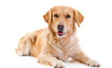

Kutya fajták
Golden retriver
A golden retriever (magyarul arany retriever) skót eredetű, középtermetű elhozó vadászkutya. Gyakran alkalmazzák segítőkutyaként, de kedves, barátságos természete miatt a városlakók körében is népszerű háziállat.
A Golden Retriever híres engedelmességéről, amely semmilyen más kutyafajtáéhoz nem hasonlítható. Minden vágya, hogy gazdája tetszését elnyerje, tudásszomja igen nagy. Derűsen veszi a mindennapokat és legszívesebben minden tevékenységben részt venne gazdájával. Az emberközpontú Retriever tehát világszerte a egyike. Derűs, jó megbízható és játékos természete miatt különösen kedvelt kisgyermekes családok körében. A „Goldie” más háziállatokkal is barátságos, könnyen összeszoktatható.
A Golden Retriever gazdik viccesen meg is szokták jegyezni, hogy betörés esetén a kedves Goldie nemhogy feltartaná a rablót, de még segítene is neki kipakolni az értékeket a házból. És valójában, az őrzés és a védés képessége csak kezdetlegesen fejlődött ki benne. Őrző-védő kutyának teljességgel alkalmatlan, de buzgósága, intelligenciája és engedelmessége miatt kiváló vakvezető, terápiás vagy kísérőkutya válhat belőle. Jó szaglása és vadászösztönei miatt gyakran alkalmazzák a rendőrségnél drogkereső vagy bombakereső kutyaként, de mentőkutyának is tökéletes.
A Golden Retriever népszerűségére azonban nem csak szeretetreméltó természetével tett szert, hanem mutatós megjelenése is egyértelműen közrejátszott ebben. Ez a középtermetű fajtatiszta kutya nagyon harmonikus és arányos testfelépítéssel lett megáldva. Formás feje van határozott stoppal. Sötét szemei az erősen pigmentált szemhéjakkal lágy és kedves kifejezést kölcsönöznek a Golden Retrievernek. Izmos testalkata és erős csontozata nagyon agilis és nagy mozgásigényű kutyává teszik.
A Golden Retriever a középméretű kutyákhoz tartozik. A kankutyák marmagassága 56 és 61 cm között van, a szukáké pedig kicsivel kisebb: 51 és 56 cm közé esik. Nemtől és mérettől függően változik a kutya súlya, de általában 30 és 40 kg közötti értéket mérhetünk. A közepesen hosszú szőrük egyenes vagy kissé hullámos, de soha sem göndör. A szőr a hátra rátapad, a kutya oldalán, első lábain, a hason és a mellkason, valamint a farkon sokkal dúsabb. A vastag aljszőrzetnek köszönhetően a Retriever könnyen kiállja az extrém, nedves, viharos időjárás próbáját is. A világos bundája az arany vagy a krémszínű bármely árnyalata lehet. A mellkason fehér szőrszálak is előfordulhatnak.